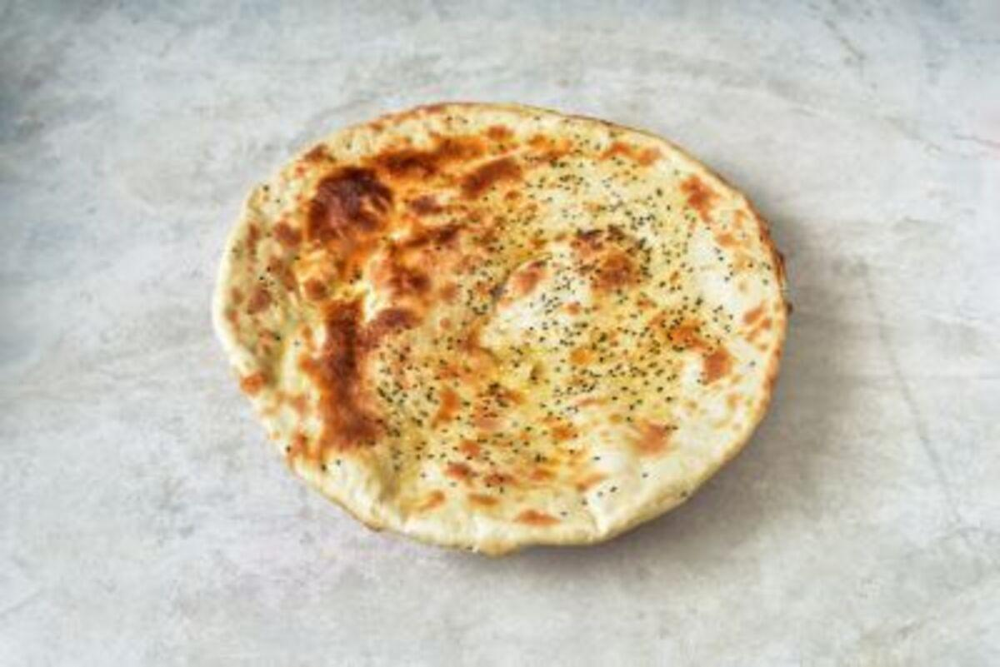

Arabic Bread Recipe

Bread in the Middle East have been very popular for its unique added flavor
This specific recipe is a Yemeni Maloga. Its a bread eaten with anything you desire. It has a crispy taste followed by a deep taste of veggies
Ingredients for making maloga are:
- Some white and some whole wheat
- Salt
- Oil
- Yeast
- Potatos, jalapeño, garlic
How to prepare:
- Mix the flour together
- Boil the potatos jalapenos and garlic and add them to the flour mix.
- Add the salt, oil and yeast
- Make a firm dough
- Leave it to rise then make it it to round patties
- Then bake at 420 for 20min until golden brown